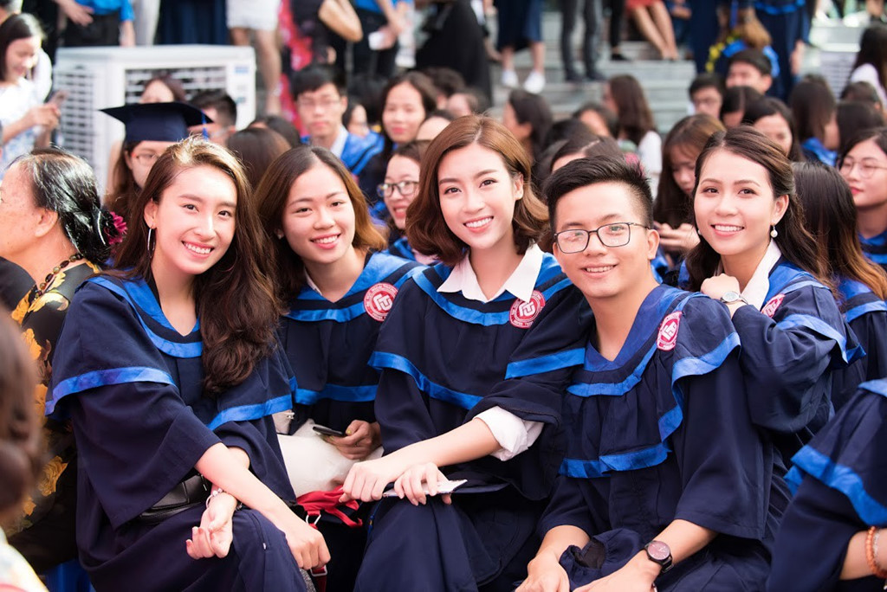
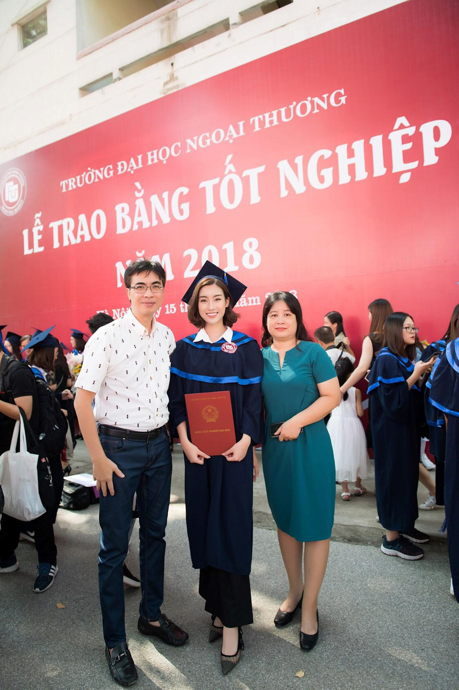
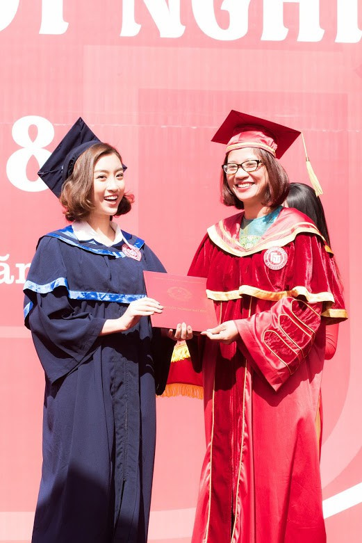
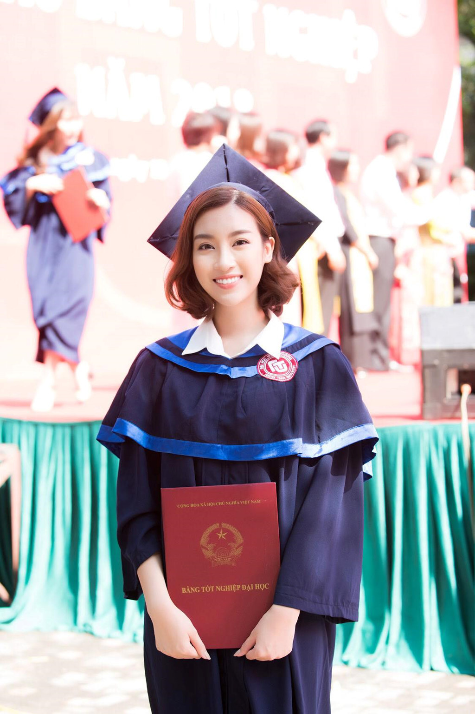
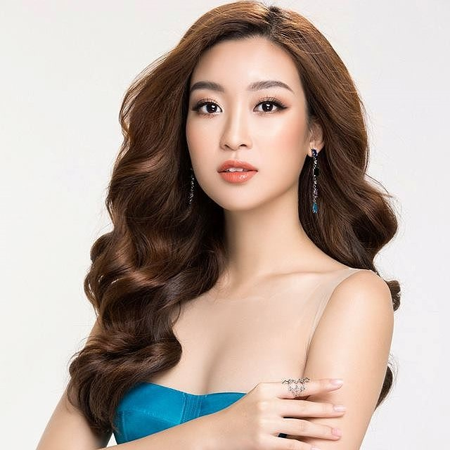

Đỗ Mỹ Linh rạng rỡ trong ngày tốt nghiệp Đại học Ngoại thương
Một ngày trước khi hết nhiệm kỳ hoa hậu, Đỗ Mỹ Linh đã làm lễ tốt nghiệp tại trường Đại học Ngoại thương (Hà Nội). Cô theo học khoa Quản trị kinh doanh của ngôi trường danh tiếng.
Phóng to
Sáng 15/9, một ngày trước khi kết thúc nhiệm kỳ Hoa hậu Việt Nam, Đỗ Mỹ Linh cùng các bạn nhận bằng tốt nghiệp tại Đại học Ngoại thương (Hà Nội), một trong những trường đại học danh giá nhất Việt Nam. Cô trở thành Hoa hậu Việt Nam vào năm 2016, khi đang còn là sinh viên. Sau khi đăng quang, Đỗ Mỹ Linh vẫn theo đuổi con đường học vấn song song với việc thực hiện trách nhiệm của hoa hậu trong các hoạt động cộng đồng.
Phóng to
Đỗ Mỹ Linh tươi tắn, rạng rỡ trong trang phục cử nhân. Khi mới đăng quang, người đẹp vấp phải nhiều tranh cãi về nhan sắc. Nhiều người cho rằng Đỗ Mỹ Linh không nổi bật để làm hoa hậu. Tuy nhiên, sau đó, người đẹp dần lấy được cảm tính của khán giả với đời tư trong sạch, không scandal và nét đẹp duyên dáng, đâm chất Á Đông.
Hoa hậu Việt Nam 2016 thi đại học được 21,75 điểm, theo học ngành Quản trị kinh doanh của Đại học Ngoại thương trong 4 năm.

Cô chụp hình cùng các bạn bè. Đỗ Mỹ Linh được nhiều bạn học nhận xét là hiền lành, thân thiện, thường xuyên tham gia các hoạt động phong trào của trường, lớp.

Bố mẹ của hoa hậu cũng có mặt trong ngày cô tốt nghiệp. Từ khi đăng quang, bố mẹ của Đỗ Mỹ Linh luôn đồng hành cùng con gái trong những sự kiện lớn nhỏ.

Đỗ Mỹ Linh nhận bằng tốt nghiệp. Trước cô, Hoa hậu Việt Nam 2014 Nguyễn Cao Kỳ Duyên cũng đăng quăng khi đang là sinh viên của Đại học Ngoại thương (Hà Nội). Tuy nhiên sau đó cô xin chuyển vào học tại cơ sở 2 ở TP.HCM. Á hậu 2 Hoa hậu Việt Nam 2016 là Thùy Dung cũng xuất thân từ ĐH Ngoại thương (TP.HCM). Thùy Dung tốt nghiệp vào cuối tháng 6/2018 và tập trung vào con đường làm MC chuyên nghiệp.

Để đảm bảo chuyện học cân đối với hoạt động nghệ thuật, cô phải thường xuyên di chuyển giữa Hà Nội và TP.HCM. Ngày 16/9, trong đêm chung kết Hoa hậu Việt Nam 2018, Đỗ Mỹ Linh sẽ trao vương miện cho người kế nhiệm, kết thúc 2 năm nhiệm kỳ hoa hậu.

Đỗ Mỹ Linh, sinh ngày 13 tháng 10 năm 1996, đăng quang Hoa hậu Việt Nam năm 2016. Cô là sinh viên Đại học Ngoại thương Hà Nội, khoa Quản trị Kinh doanh. Sau khi đăng quang, cô tham gia làm người mẫu, MC cho các chương trình truyền hình, sự kiện lớn và làm gương mặt đại diện cho một số thương hiệu. Đỗ Mỹ Linh là đại diện Việt Nam tham gia cuộc thi Miss World 2017 (Hoa hậu Thế giới) diễn ra tại Trung Quốc.
Bạn có biết: Năm 2015, Mỹ Linh tham gia cuộc thi Hoa hậu Hoàn vũ Việt Nam và chỉ dừng lại ở top 15.
- Ngày sinh: 13/10/1996
- Chiều cao: 1.71 m
- Số đo hình thể: 87 - 61 - 94 cm
Facebook
Thu Thủy
Ảnh: Thien Hung
Đỗ Mỹ Linh tốt nghiệp Đỗ Mỹ Linh hoa hậu Việt Nam hoa hậu đỗ mỹ linh
Bình luận